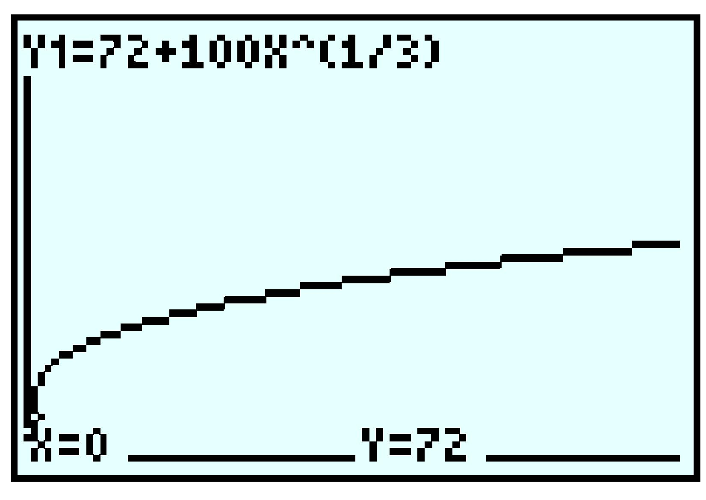

Section 3.3 Roots and Radicals
¶In Section 3.2 we saw that inverse variation can be expressed as a power function by using negative exponents. We can also use exponents to denote square roots and other radicals.
Subsection 3.3.1 \(n\)th Roots
Recall that \(s\) is a square root of \(b\) if \(s^2 = b\text{,}\) and \(s\) is a cube root of \(b\) if \(s^3 = b\text{.}\) In a similar way, we can define the fourth, fifth, or sixth root of a number. For instance, the fourth root of \(b\) is a number \(s\) whose fourth power is \(b\text{.}\) In general, we make the following definition.
\(n\)th Roots.
\(s\) is called an \(n\)th root of \(b\) if \(s^n = b\text{.}\)
We use the symbol \(\sqrt[n]{b}\) to denote the \(n\)th root of \(b\text{.}\) An expression of the form \(\sqrt[n]{b}\) is called a radical, \(b\) is called the radicand, and \(n\) is called the index of the radical.
Example 3.3.1.
- \(\sqrt[4]{81} = 3\) because \(3^4 = 81\)
- \(\sqrt[5]{32} = 2\) because \(2^5 = 32\)
- \(\sqrt[6]{64} = 2\) because \(2^6 = 64\)
- \(\sqrt[4]{1} = 1\) because \(1^4 = 1\)
- \(\sqrt[5]{100,000} = 10\) because \(10^5 = 100,000\)
Checkpoint 3.3.2.
Evaluate each radical.
- \(\displaystyle \sqrt[4]{16}\)
- \(\displaystyle \sqrt[5]{243}\)
\(2\)
\(3\)
Subsection 3.3.2 Exponential Notation for Radicals
A convenient notation for radicals uses fractional exponents. Consider the expression \(9^{1/2}\text{.}\) What meaning can we attach to an exponent that is a fraction? The third law of exponents says that when we raise a power to a power, we multiply the exponents together:
Therefore, if we square the number \(9^{1/2}\text{,}\) we get
Thus, \(9^{1/2}\) is a number whose square is \(9\text{.}\) But this means that \(9^{1/2}\) is a square root of \(9\text{,}\) or
In general, any nonnegative number raised to the \(1/2\) power is equal to the positive square root of the number, or
Example 3.3.3.
- \(\displaystyle 25^{1/2} = 5\)
- \(\displaystyle -25^{1/2} = -5\)
- \((-25)^{1/2}\) is not a real number.
- \(\displaystyle 0^{1/2} = 0\)
Checkpoint 3.3.4.
Evaluate each power.
- \(\displaystyle 4^{1/2}\)
- \(\displaystyle 4^{-2}\)
- \(\displaystyle 4^{-1/2}\)
- \(\displaystyle \left(\dfrac{1}{4}\right)^{1/2}\)
\(2\)
\(\dfrac{1}{16} \)
\(\dfrac{1}{2} \)
\(\dfrac{1}{2} \)
The same reasoning works for roots with any index. For instance, \(8^{1/3}\) is the cube root of \(8\text{,}\) because
In general, we make the following definition for fractional exponents.
Exponential Notation for Radicals.
For any integer \(n \ge 2\) and for \(a \ge 0\text{,}\)
Example 3.3.5.
- \(\displaystyle 81^{1/4} = \sqrt[4]{81} = 3\)
- \(\displaystyle 125^{1/3} = \sqrt[3]{125} = 5\)
Caution 3.3.6.
Note that
An exponent of \(\dfrac{1}{2}\) denotes the square root of its base, and an exponent of \(\dfrac{1}{3}\) denotes the cube root of its base.
Checkpoint 3.3.7.
Write each power with radical notation, and then evaluate.
- \(\displaystyle 32^{1/5}\)
- \(\displaystyle 625^{1/4}\)
\(\sqrt[5]{32}= 2\)
\(\sqrt[4]{625}= 5\)
Of course, we can use decimal fractions for exponents as well. For example,
Example 3.3.8.
- \(\displaystyle 100^{0.5} = \sqrt{100} = 10\)
- \(\displaystyle 16^{0.25} = \sqrt[4]{16} = 2\)
Checkpoint 3.3.9.
Write each power with radical notation, and then evaluate.
- \(\displaystyle 100,000^{0.2}\)
- \(\displaystyle 81^{0.25}\)
\(\sqrt[5]{100,000}=10 \)
\(\sqrt[4]{81}=3 \)
Subsection 3.3.3 Irrational Numbers
What about \(n\)th roots such as \(\sqrt{23}\) and \(5^{1/3}\) that cannot be evaluated easily? These are examples of irrational numbers. We can use a calculator to obtain decimal approximations for irrational numbers. For example, you can verify that
It is not possible to write down an exact decimal equivalent for an irrational number, but we can find an approximation to as many decimal places as we like.
Caution 3.3.10.
The following keying sequence for evaluating the irrational number \(7^{1/5}\) is incorrect:
7 ^ 1 ÷ 5 ENTER
You can check that this sequence calculates \(\dfrac{7^1}{5}\text{,}\) instead of \(7^{1/5}\text{.}\) Recall that according to the order of operations, powers are computed before multiplications or divisions. We must enclose the exponent \(1/5\) in parentheses and enter
7 ^ ( 1 ÷ 5 ) ENTER
Or, because \(\frac{1}{5}= 0.2\text{,}\) we can enter
7 ^ 0.2 ENTER
Subsection 3.3.4 Working with Fractional Exponents
Fractional exponents simplify many calculations involving radicals. You should learn to convert easily between exponential and radical notation. Remember that a negative exponent denotes a reciprocal.
Example 3.3.11.
Convert each radical to exponential notation.
- \(\displaystyle \sqrt[3]{12} = 12^{1/3}\)
- \(\displaystyle \sqrt[4]{2y} = (2y)^{1/4} \text{ or } (2y)^{0.25}\)
Checkpoint 3.3.12.
Convert each radical to exponential notation.
- \(\displaystyle \dfrac{1}{\sqrt[5]{ab}}\)
- \(\displaystyle 3\sqrt[6]{w}\)
\((ab)^{-1/5} \)
\(3w^{1/6} \)
Example 3.3.13.
Convert each power to radical notation.
- \(\displaystyle 5^{1/2} = \sqrt{5}\)
- \(\displaystyle x^{0.2} = \sqrt[5]{x}\)
- \(\displaystyle 2x^{1/3} = 2 \sqrt[3]{x}\)
- \(\displaystyle 8a^{-1/4} = \dfrac{8}{\sqrt[4]{a}}\)
Note 3.3.14.
In Example 3.3.13d, note that the exponent \(-1/4\) applies only to \(a\text{,}\) not to \(8a\text{.}\)
Checkpoint 3.3.15.
- Convert \(\dfrac{3}{\sqrt[4]{2x} } \) to exponential notation.
- Convert \(-5b^{0.125}\) to radical notation.
\(3(2x)^{-1/4} \)
\(-5\sqrt[8]{b} \)
Subsection 3.3.5 Using Fractional Exponents to Solve Equations
In Chapter 2, we learned that raising to powers and taking roots are inverse operations, that is, each operation undoes the effects of the other. This relationship is especially easy to see when the root is denoted by a fractional exponent. For example, to solve the equation
we would take the fourth root of each side. But instead of using radical notation, we can raise both sides of the equation to the power \(\dfrac{1}{4}\text{:}\)
The third law of exponents tells us that \(\left(x^a\right)^b = x^{ab}\text{,}\) so
In general, to solve an equation involving a power function \(x^n\text{,}\) we first isolate the power, then raise both sides to the exponent \(\dfrac{1}{n}\text{.}\)
Example 3.3.16.
For astronomers, the mass of a star is its most important property, but it is also the most difficult to measure directly. For many stars, their luminosity, or brightness, varies roughly as the fourth power of the mass.
- Our Sun has luminosity \(4 \times 10^{26}\) watts and mass \(2 \times 10^{30}\) kilograms. Because the numbers involved are so large, astronomers often use these solar constants as units of measure: The luminosity of the Sun is \(1\) solar luminosity, and its mass is \(1\) solar mass. Write a power function for the luminosity, \(L\text{,}\) of a star in terms of its mass, \(M\text{,}\) using units of solar mass and solar luminosity.
- The star Sirius is \(23\) times brighter than the Sun, so its luminosity is \(23\) solar luminosities. Estimate the mass of Sirius in units of solar mass.
- Because \(L\) varies as the fourth power of \(M\text{,}\) we have\begin{equation*} L = kM^4 \end{equation*}Substituting the values of \(L\) and \(M\) for the Sun (namely, \(L = 1\) and \(M = 1\)), we find\begin{equation*} 1 = k(1)^4 \end{equation*}so \(k = 1\) and \(L = M^4\text{.}\)
- We substitute the luminosity of Sirius, \(L = 23\text{,}\) to get\begin{equation*} 23 = M^4 \end{equation*}To solve the equation for \(M\text{,}\) we raise both sides to the \(\dfrac{1}{4}\) power.\begin{equation*} \begin{aligned}[t] (23)^{1/4} \amp = \left(M^4\right)^{1/4} \\ 2.1899 \amp = M \end{aligned} \end{equation*}The mass of Sirius is about \(2.2\) solar masses, or about \(2.2\) times the mass of the Sun.
Checkpoint 3.3.17.
A spherical fish tank in the lobby of the Atlantis Hotel holds about \(905\) cubic feet of water. What is the radius of the fish tank?
About \(6\) feet
Subsection 3.3.6 Power Functions
The basic functions \(y = \sqrt{x}\) and \(y = \sqrt[3]{x}\) are power functions of the form \(f (x) = x^{1/n}\text{,}\) and the graphs of all such functions have shapes similar to those two, depending on whether the index of the root is even or odd.
Figure (a) shows the graphs of
Figure (b) shows the graphs of

We cannot take an even root of a negative number. (See Subsection 3.3.8 "A Note on Roots of Negative Numbers" at the end of this section.) Hence, if \(n\) is even, the domain of \(f (x) = x^{1/n}\) is restricted to nonnegative real numbers, but if \(n\) is odd, the domain of \(f (x) = x^{1/n}\) is the set of all real numbers.
We will also encounter power functions with negative exponents. For example, an animal's heart rate is related to its size or mass, with smaller animals generally having faster heart rates. The heart rates of mammals are given approximately by the power function
where \(m\) is the animal's mass and \(k\) is a constant.
Example 3.3.18.
A typical human male weighs about \(70\) kilograms and has a resting heart rate of \(70\) beats per minute.
- Find the constant of proportionality, \(k\text{,}\) and write a formula for \(H(m)\text{.}\)
-
Fill in the table with the heart rates of the mammals whose masses are given.
Animal Shrew Rabbit Cat Wolf Horse Polar bear Elephant Whale Mass (kg) \(0.004\) \(2\) \(4\) \(80\) \(300\) \(600\) \(5400\) \(70,000\) Heart rate \(\) \(\) \(\) \(\) \(\) \(\) \(\) \(\) - Sketch a graph of \(H\) for masses up to \(6000\) kilograms.
-
We substitute \(H = 70\) and \(m = 70\) into the equation; then solve for \(k\text{.}\)
\begin{equation*} \begin{aligned}[t] 70 \amp = k \cdot 70^{-1/4} \\ k \amp= \frac{70}{70^{-1/4}} = 70^{5/4} \approx 202.5 \\ \end{aligned} \end{equation*}Thus, \(H(m) = 202.5m^{-1/4}\text{.}\)
-
We evaluate the function \(H\) for each of the masses given in the table.
Animal Shrew Rabbit Cat Wolf Horse Polar bear Elephant Whale Mass (kg) \(0.004\) \(2\) \(4\) \(80\) \(300\) \(600\) \(5400\) \(70,000\) Heart rate \(805\) \(170\) \(143\) \(68\) \(49\) \(41\) \(24\) \(12\) -
We plot the points in the table to obtain the graph shown below.

Many properties relating to the growth of plants and animals can be described by power functions of their mass. The study of the relationship between the growth rates of different parts of an organism, or of organisms of similar type, is called allometry. An equation of the form
used to describe such a relationship is called an allometric equation.
Of course, power functions can be expressed using any of the notations we have discussed. For example, the function in Example 3.3.18 can be written as
Checkpoint 3.3.19.
-
Complete the table of values for the power function \(f (x) = x^{-1/2}\text{.}\)
\(x\) \(0.1\) \(0.25\) \(0.5\) \(1\) \(2\) \(4\) \(8\) \(10\) \(20\) \(200\) \(f(x)\) \(\) \(\) \(\) \(\) \(\) \(\) \(\) \(\) \(\) \(\) Sketch the graph of \(y = f (x)\text{.}\)
Write the formula for \(f (x)\) with a decimal exponent, and with radical notation.
\(x\) \(0.1\) \(0.25\) \(0.5\) \(1\) \(2\) \(4\) \(8\) \(10\) \(20\) \(200\) \(f(x)\) \(3.2\) \(2\) \(1.4\) \(1\) \(0.71\) \(0.5\) \(0.35\) \(0.32\) \(0.22\) \(0.1\) 
\(f (x) = x^{-0.5}\text{,}\) \(f(x)=\dfrac{1}{\sqrt{x}} \)
Subsection 3.3.7 Solving Radical Equations
A radical equation is one in which the variable appears under a square root or other radical. The radical may be denoted by a fractional exponent. For example, the equation
is a radical equation because \(x^{1/3} = \sqrt[3]{x}\text{.}\) To solve the equation, we first isolate the power to get
Then we raise both sides of the equation to the reciprocal of \(\dfrac{1}{3}\text{,}\) or \(3\text{.}\)
Example 3.3.20.
When a car brakes suddenly, its speed can be estimated from the length of the skid marks it leaves on the pavement. A formula for the car’s speed, in miles per hour, is \(v = f (d) = (24d)^{1/2}\text{,}\) where the length of the skid marks, \(d\text{,}\) is given in feet.
- If a car leaves skid marks \(80\) feet long, how fast was the car traveling when the driver applied the brakes?
- How far will a car skid if its driver applies the brakes while traveling \(80\) miles per hour?
-
To find the velocity of the car, we evaluate the function for \(d = \alert{80}\text{.}\)
\begin{equation*} \begin{aligned}[t] v\amp= (24 \cdot \alert{80})^{1/2} \\ \amp = (1920)^{1/2} \approx 43.8178046\\ \end{aligned} \end{equation*}The car was traveling at approximately \(44\) miles per hour.
-
We would like to find the value of \(d\) when the value of \(v\) is known. We substitute \(v = \alert{80}\) into the formula and solve the equation
\begin{equation*} \alert{80} = (24d)^{1/2} ~~ \blert{\text{ Solve for }d.} \end{equation*}Because \(d\) appears to the power \(\frac{1}{2}\text{,}\) we first square both sides of the equation to get
\begin{equation*} \begin{aligned}[t] 80^2 \amp = \left((24d)^{1/2}\right)^2 \amp\amp \blert{\text{Square both sides.}}\\ 6400 \amp = 24d \amp\amp \blert{\text{Divide by }24.}\\ 266.\overline{6} \amp = d \end{aligned} \end{equation*}You can check that this value for \(d\) works in the original equation. Thus, the car will skid approximately \(267\) feet. A graph of the function \(v = (24d)^{1/2}\) is shown below, along with the points corresponding to the values in parts (a) and (b).

Note 3.3.21.
Thus, we can solve an equation where one side is an \(n\)th root of \(x\) by raising both sides of the equation to the \(n\)th power. We must be careful when raising both sides of an equation to an even power, since extraneous solutions may be introduced. However, because most applications of power functions deal with positive domains only, they do not usually involve extraneous solutions.
Checkpoint 3.3.22.
In Example 3.3.18, we found the heart-rate function, \(H(m) = 202.5m^{-1/4}\text{.}\) What would be the mass of an animal whose heart rate is \(120\) beats per minute?
\(81\) kg
Subsection 3.3.8 A Note on Roots of Negative Numbers
¶You already know that \(\sqrt{-9}\) is not a real number, because there is no real number whose square is \(-9\text{.}\) Similarly, \(\sqrt[4]{-16}\) is not a real number, because there is no real number \(r\) for which \(r^4 = -16\text{.}\) (Both of these radicals are complex numbers. Complex numbers are discussed in Chapter 7.) In general, we cannot find an even root (square root, fourth root, and so on) of a negative number.
On the other hand, every positive number has two even roots that are real numbers. For example, both \(3\) and \(-3\) are square roots of \(9\text{.}\) The symbol \(\sqrt{9}\) refers only to the positive, or principal root, of \(9\text{.}\) If we want to refer to the negative square root of \(9\text{,}\) we must write \(-\sqrt{9} = -3\text{.}\) Similarly, both \(2\) and \(-2\) are fourth roots of \(16\text{,}\) because \(2^4 = 16\) and \((-2)^4 = 16\text{.}\) However, the symbol \(\sqrt[4]{16}\) refers to the principal, or positive, fourth root only. Thus,
Things are simpler for odd roots (cube roots, fifth roots, and so on). Every real number, whether positive, negative, or zero, has exactly one real-valued odd root. For example,
Here is a summary of our discussion.
Roots of Real Numbers.
- Every positive number has two real-valued roots, one positive and one negative, if the index is even.
- A negative number has no real-valued root if the index is even.
- Every real number, positive, negative, or zero, has exactly one real-valued root if the index is odd.
Example 3.3.23.
- \(\sqrt[4]{-625}\) is not a real number.
- \(\displaystyle - \sqrt[4]{625} = -5\)
- \(\displaystyle \sqrt[5]{-1} = -1\)
- \(\sqrt[4]{-1}\) is not a real number.
The same principles apply to powers with fractional exponents. Thus
but \((-64)^{1/6}\) is not a real number. On the other hand,
because the exponent \(1/6\) applies only to \(64\text{,}\) and the negative sign is applied after the root is computed.
Checkpoint 3.3.24.
Evaluate each power, if possible.
- \(\displaystyle -81^{1/4}\)
- \(\displaystyle (-81)^{1/4}\)
- \(\displaystyle -64^{1/3}\)
- \(\displaystyle (-64)^{1/3}\)
\(-3\)
undefined
\(-4\)
\(-4\)
Subsection 3.3.9 Section Summary
¶Subsubsection 3.3.9.1 Vocabulary
Look up the definitions of new terms in the Glossary.
\(n\)th root
Radical
Radical equation
Radical notation
Index
Exponential notation
Radicand
Allometric equation
Irrational number
Subsubsection 3.3.9.2 CONCEPTS
\(n\)th roots: \(s\) is called an \(n\)th root of \(b\) if \(s^n = b\text{.}\)
Exponential notation: For any integer \(n\ge 2\) and for \(a\ge 0\text{,}\) \(a^{1/n}=\sqrt[n]{a}\text{.}\)
We cannot write down an exact decimal equivalent for an irrational number, but we can approximate an irrational number to as many decimal places as we like.
We can solve the equation \(x^n = b\) by raising both sides to the \(\dfrac{1}{n} \) power.
An allometric equation is a power function of the form \(\text{variable} = k (\text{mass})^p\text{.}\)
We can solve the equation \(x^{1/n} = b\) by raising both sides to the \(n\)th power.
Roots of Real Numbers.
Every positive number has two real-valued roots, one positive and one negative, if the index is even.
A negative number has no real-valued root if the index is even.
Every real number, positive, negative, or zero, has exactly one real-valued root if the index is odd.
Subsubsection 3.3.9.3 STUDY QUESTIONS
Use an example to illustrate the terms radical, radicand, index, and principal root.
Explain why \(x^{1/4}\) is a reasonable notation for \(\sqrt[4]{x} \text{.}\)
What does the notation \(x^{0.2}\) mean?
-
Express each of the following algebraic notations in words; then evaluate each for \(= 16\text{:}\)
\begin{equation*} 4x, ~~x^4, ~~\frac{x}{4}, ~~\frac{1}{4}x, ~~x^{1/4}, ~~x-4, ~~x^{-1/4} \end{equation*} How is the third law of exponents, \((xa)^b = x^{ab}\text{,}\) useful in solving equations?
Subsubsection 3.3.9.4 SKILLS
Practice each skill in the Homework 3.3.10 problems listed.
Evaluate powers and roots: #1–8, 17–20
Convert between radical and exponential notation: #9–16, 21 and 22
Solve radical equations: #23–38, 59 and 60
Graph and analyze power functions: #39–58
Work with fractional exponents: #61–68
Exercises 3.3.10 Homework 3.3
¶Find the indicated root without using a calculator; then check your answers.
Find the indicated power without using a calculator; then check your answers.
Write each expression in radical form.
9.
\(3^{1/2} \)
\(4x^{1/3} \)
\((4x)^{0.2} \)
\(\sqrt{3} \)
\(4\sqrt[3]{x} \)
\(\sqrt[5]{4x} \)
10.
\(7^{1/2} \)
\(3x^{1/4} \)
\((3x)^{0.25} \)
11.
\(6^{-1/3} \)
\(3(xy)^{-0.125} \)
\((x-2)^{1/4} \)
\(\dfrac{1}{\sqrt[3]{6}} \)
\(\dfrac{3}{\sqrt[8]{xy}} \)
\(\sqrt[4]{x-2} \)
12.
\(8^{-1/4} \)
\(y(5x)^{-0.5} \)
\((y+2)^{1/3} \)
Write each expression in exponential form.
13.
\(\sqrt{7} \)
\(\sqrt[3]{2x} \)
\(2\sqrt[5]{z} \)
\(7^{1/2} \)
\((2x)^{1/3} \)
\(2z^{1/5} \)
14.
\(\sqrt{5} \)
\(\sqrt[3]{4y} \)
\(5\sqrt[3]{x} \)
15.
\(\dfrac{-3} {\sqrt[4]{6} }\)
\(\sqrt[4]{x-3y} \)
\(\dfrac{-1} {\sqrt[5]{1+3b} } \)
\(-3\cdot 6^{-1/4} \)
\((x-3y)^{1/4} \)
\(-(1+3b)^{-1/5} \)
16.
\(\dfrac{2} {\sqrt[5]{3} } \)
\(\sqrt[3]{y+2x} \)
\(\dfrac{-1} {\sqrt[4]{3a-2b} } \)
Simplify.
17.
\(\left(\sqrt[3]{125} \right)^3 \)
\(\left(\sqrt[4]{2} \right)^4 \)
\(\left(3\sqrt{7} \right)^2 \)
\(\left(-x^2\sqrt[3]{2x} \right)^3 \)
\(125\)
\(2\)
\(63\)
\(-2x^7\)
18.
\(\left(\sqrt[4]{16} \right)^4 \)
\(\left(\sqrt[3]{6} \right)^3 \)
\(\left(2\sqrt[3]{12} \right)^3 \)
\(\left(-a^3\sqrt[4]{a^2} \right)^4 \)
Use a calculator to approximate each irrational number to the nearest thousandth.
19.
\(2^{1/2} \)
\(\sqrt[3]{75} \)
\(\sqrt[4]{1.6} \)
\(365^{-1/3} \)
\(0.006^{-0.2} \)
\(1.414\)
\(4.217\)
\(1.125\)
\(0.140\)
\(2.782 \)
20.
\(3^{1/2} \)
\(\sqrt[4]{60} \)
\(\sqrt[3]{1.4} \)
\(1058^{-1/5} \)
\(1.05^{-0.1} \)
Write each expression as a power function.
21.
\(g(x)=3.7 \sqrt[3]{x} \)
\(H(x)=\sqrt[4]{85x} \)
\(F(t)=\dfrac{25}{\sqrt[5]{t}} \)
\(g(x) = 3.7x^{1/3} \)
\(H(x) = 85^{1/4}x^{1/4} \)
\(F(t) = 25t^{-1/5} \)
22.
\(h(v)=12.7 \sqrt{v} \)
\(F(p)=\sqrt[3]{2.9p} \)
\(G(w)=\dfrac{5}{8\sqrt[8]{w}} \)
Solve.
23.
\(6.5x^{1/3} + 3.8 = 33.05\)
\(x = 91.125\)
24.
\(9.8 - 76x^{1/4} + 15 = 9.6\)
25.
\(4(x + 2)^{1/5} = 12\)
\(x = 241\)
26.
\(-9(x - 3)^{1/5} = 18\)
27.
\((2x - 3)^{-1/4} = \dfrac{1}{2}\)
\(x = \dfrac{19}{2} \)
28.
\((5x + 2)^{-1/3} = \dfrac{1}{4}\)
29.
\(\sqrt[3]{x^2-3} = 3\)
\(x = \pm\sqrt{30} \)
30.
\(\sqrt[4]{x^3-7} = 2\)
Solve each formula for the indicated variable.
31.
\(T = 2\pi\sqrt{\dfrac{L}{g}}\) for \(L\text{.}\) Also solve for \(g\text{.}\)
\(L=\dfrac{gT^2}{4\pi^2} \)
32.
\(T = 2\pi \sqrt{\dfrac{m}{k}}\) for \(m\)
33.
\(r = \sqrt{t^2-s^2}\) for \(s\text{.}\) Also solve for \(t\text{.}\)
\(s=\pm\sqrt{t^2-r^2} \)
34.
\(c = \sqrt{a^2-b^2}\) for \(b\)
35.
\(r = \sqrt[3] {\dfrac{3V}{4\pi}}\) for \(V\)
\(v=\dfrac{4}{3}\pi r^3 \)
36.
\(d = \sqrt[3] {\dfrac{16Mr^2}{m}}\) for \(M\)
37.
\(R = \sqrt[4] {\dfrac{8Lvf}{\pi p}}\) for \(p\)
\(p=\dfrac{8Lvf}{\pi R^4} \)
36.
\(T = \sqrt[4] {\dfrac{E}{SA}}\) for \(A\)
39.
The period of a pendulum is the time it takes for the pendulum to complete one entire swing, from left to right and back again. The greater the length, \(L\text{,}\) of the pendulum, the longer its period, \(T\text{.}\) In fact, if \(L\) is measured in feet, then the period is given in seconds by
Write the formula for \(T\) as a power function in the form \(f (x) = kx^p\text{.}\)
Suppose you are standing in the Convention Center in Portland, Oregon, and you time the period of its Foucault pendulum (the longest in the world). Its period is approximately \(10.54\) seconds. How long is the pendulum?
Choose a reasonable domain for the function \(T = f (L)\) and graph the function.
\(T=\dfrac{2\pi}{\sqrt{32}}L^{1/2} \)
\(90\) feet

40.
If you are flying in an airplane at an altitude of \(h\) miles, on a clear day you can see a distance of \(d\) miles to the horizon, where
Write the formula for \(d\) as a power function in the form \(f (x) = kx^p\text{.}\)
Choose a reasonable domain for the function \(d = f (h)\) and graph the function.
At what altitude will you be able to see for a distance of \(100\) miles? How high is that in feet?
41.
If you walk in the normal way, your maximum speed, \(v\text{,}\) in meters per second, is limited by the length of your legs, \(r\text{,}\) according to the formula
where the constant \(g\) is approximately \(10\) meters per second squared. (Source: Alexander, 1992)
A typical adult man has legs about \(0.9\) meter long. How fast can he walk?
A typical four-year-old has legs \(0.5\) meter long. How fast can she walk?
Graph maximum walking speed as a function of leg length.
Race-walkers can walk as fast as \(4.4\) meters per second by rotating their hips so that the effective length of their legs is increased. What is that effective length?
On the Moon the value of \(g\) is \(1.6\) meters per second squared. How fast can a typical adult man walk on the Moon?
\(3\) meters per second
\(b\approx 2.2\) meters per second

\(1.9\) meters
\(1.2\)meters per second
42.
When a ship moves through the water, it creates waves that impede its own progress. Because of this resistance, there is an upper limit to the speed at which a ship can travel, given, in knots, by
where \(L\) is the length of the vessel, in feet. (Source: Gilner, 1972)
Graph maximum speed as a function of vessel length.
The world's largest ship, the oil tanker Jahre Viking, is \(1054\) feet long. What is its top speed?
As a ship approaches its maximum speed, the power required increases sharply. Therefore, most merchant ships are designed to cruise at speeds no higher than \(v_c = 0.8\sqrt{L}\text{.}\) Graph \(v_c\) on the same axes with \(v_\text{max}\text{.}\)
What is the cruising speed of the Jahre Viking? What percent of its maximum speed is that?
43.
A rough estimate for the radius of the nucleus of an atom is provided by the formula
where \(A\) is the mass number of the nucleus and \(k\approx 1.3 \times 10^{-13}\) centimeter.
Estimate the radius of the nucleus of an atom of iodine-127, which has mass number \(127\text{.}\) If the nucleus is roughly spherical, what is its volume?
The nuclear mass of iodine-127 is \(2.1 \times 10^{-22}\) gram. What is the density of the nucleus? (Density is mass per unit volume.)
-
Complete the table of values for the radii of various radioisotopes.
Element Carbon Potassium Cobalt Technetium Radium Mass
number, \(A\)\(14\) \(40\) \(60\) \(99\) \(226\) Radius, \(r\) \(\) \(\) \(\) \(\) \(\) Sketch a graph of \(r\) as a function of \(A\text{.}\) (Use units of \(10^{-13}\) centimeter on the vertical axis.)
\(6.5\times 10^{-13}\) cm; \(1.17\times 10^{-36} \text{ cm}^3\)
\(1.8\times 10^{14} g/\text{cm}^3\)
Element Carbon Potassium Cobalt Technetium Radium Mass
number, \(A\)\(14\) \(40\) \(60\) \(99\) \(226\) Radius, \(r\)
(\(10^{-13}\) cm)\(3.1\) \(4.4\) \(5.1\) \(6\) \(7.9\) 
44.
In the sport of crew racing, the best times vary closely with the number of men in the crew, according to the formula
where \(n\) is the number of men in the crew and \(t\) is the winning time, in minutes, for a \(2000\)-meter race.
If the winning time for the \(8\)-man crew was \(5.73\) minutes, estimate the value of \(k\text{.}\)
-
Complete the table of values of predicted winning times for the other racing classes.
Size of crew, \(n\) \(1\) \(2\) \(4\) \(8\) Winning time, \(t\) \(\hphantom{0000} \) \(\hphantom{0000} \) \(\hphantom{0000} \) \(\hphantom{0000} \) Sketch a graph of \(t\) as a function of \(n\text{.}\)
In Problems 45–48, one quantity varies directly with the square root of the other, that is, \(y = k\sqrt{x}\text{.}\)
Find the value of \(k\) and write a power function relating the variables.
Use your function to answer the question.
Graph your function and verify your answer to part (b) on the graph.
45.
The stream speed necessary to move a granite particle is a function of the diameter of the particle; faster river currents can move larger particles. The table shows the stream speed necessary to move particles of different sizes. What speed is needed to carry a particle with diameter \(0.36\) centimeter?
| Diameter, \(d\) (cm) | Speed, \(s\) (cm/sec) |
| \(0.01\) | \(5\) |
| \(0.04\) | \(10\) |
| \(0.09\) | \(15\) |
| \(0.16\) | \(20\) |
\(s = 50\sqrt{d}\)
\(30\) cm/sec

46.
The speed at which water comes out of the spigot at the bottom of a water jug is a function of the water level in the jug; it slows down as the water level drops. The table shows different water levels and the resulting flow speeds. What is the flow speed when the water level is at \(16\) inches?
| Level, \(L\) (in) | Speed, \(s\) (gal/min) |
| \(9\) | \(1.5\) |
| \(6.25\) | \(1.25\) |
| \(4\) | \(1\) |
| \(2.25\) | \(0.75\) |
47.
The rate, \(r\text{,}\) in feet per second, at which water flows from a fire hose is a function of the water pressure, \(P\text{,}\) in psi (pounds per square inch). What is the rate of water flow at a typical water pressure of \(60\) psi?
| \(P\) (psi) | \(10\) | \(20\) | \(30\) | \(40\) |
| \(r\) (ft/sec) | \(38.3\) | \(54.1\) | \(66.3\) | \(76.5\) |
\(r = 12.1\sqrt{P}\)
\(94\) ft/sec

48.
When a layer of ice forms on a pond, the thickness of the ice, \(d\text{,}\) in centimeters, is a function of time, \(t\text{,}\) in minutes. How thick is the ice after \(3\) hours?
| \(t\) (min) | \(10\) | \(30\) | \(40\) | \(60\) |
| \(d\) (cm) | \(0.50\) | \(0.87\) | \(1.01\) | \(1.24\) |
49.
Membership in the County Museum has been increasing since it was built in \(1980\text{.}\) The number of members is given by the function
where \(t\) is the number of years since \(1980\text{.}\)
How many members were there in \(1990\text{?}\) In \(2000\text{?}\)
In what year will the museum have \(400\) members? If the membership continues to grow according to the given function, when will the museum have \(500\) members?
Graph the function \(M(t)\text{.}\) How would you describe the growth of the membership over time?
\(287\text{;}\) \(343\)
\(2015\text{;}\) \(2058\)
-
The membership grows rapidly at first but is growing less rapidly with time.

50.
Due to improvements in technology, the annual electricity cost of running most major appliances has decreased steadily since \(1970\text{.}\) The average annual cost of running a refrigerator is given, in dollars, by the function
where \(t\) is the number of years since \(1970\text{.}\)
How much did it cost to run a refrigerator in \(1980\text{?}\) In \(1990\text{?}\)
When was the cost of running a refrigerator half of the cost in \(1970\text{?}\) If the cost continues to decline according to the given function, when will it cost \(\$50\) per year to run a refrigerator?
Graph the function \(C(t)\text{.}\) Do you think that the cost will continue to decline indefinitely according to the given function? Why or why not?
51.
Match each function with the description of its graph in the first quadrant.
\(f (x) = x^2\)
\(f (x) = x^{-2}\)
\(f (x) = x^{1/2}\)
Increasing and concave up
Increasing and concave down
Decreasing and concave up
Decreasing and concave down
I
III
II
none
52.
In each pair, match the functions with their graphs.

53.
-
Graph the functions
\begin{equation*} y_1 = x^{1/2},~~ y_2 = x^{1/3},~~ y_3 = x^{1/4},~~ y_4 = x^{1/5} \end{equation*}in the window
\begin{align*} {\text{Xmin}} \amp = 0 \amp\amp {\text{Xmax}} = 100\\ {\text{Ymin}} \amp = 0 \amp\amp {\text{Ymax}} = 10 \end{align*}What do you observe?
Use your graphs to evaluate \(100^{1/2}\text{,}\) \(100^{1/3}\text{,}\) \(100^{1/4}\text{,}\) and \(100^{1/5}\text{.}\)
Use your calculator to evaluate \(100^{1/n}\) for \(n = 10\text{,}\) \(n = 100\text{,}\) and \(n = 1000\text{.}\) What happens when \(n\) gets large?
The graphs of \(x^{1/n}\) become closer and closer to horizontal when \(n\) increases (for \(x\gt 1\)).
\(10,~ 4.64,~ 3.16,~ 2.51\)
\(1.58, 1.05,~ 1.005\text{;}\) the values decrease towards \(1\text{.}\)
54.
-
Graph the functions
\begin{equation*} y_1 = x^{1/2},~~ y_2 = x^{1/3},~~ y_3 = x^{1/4},~~ y_4 = x^{1/5} \end{equation*}in the window
\begin{align*} {\text{Xmin}} \amp = 0 \amp\amp {\text{Xmax}} = 1\\ {\text{Ymin}} \amp = 0 \amp\amp {\text{Ymax}} = 1 \end{align*}What do you observe?
Use your graphs to evaluate \(0.5^{1/2}\text{,}\) \(0.5^{1/3}\text{,}\) \(0.5^{1/4}\text{,}\) and \(0.5^{1/5}\text{.}\)
Use your calculator to evaluate \(0.5^{1/n}\) for \(n = 10\text{,}\) \(n = 100\text{,}\) and \(n = 1000\text{.}\) What happens when \(n\) gets large?
For Problems 55–58, graph each set of functions in the given window. What do you observe?
55.
\(y_1 = \sqrt{x}\text{,}\) \(y_2 = x^2\text{,}\) \(y_3 = x\)
The graphs of \(y_1\) and \(y_2\) are symmetric about \(y_3 = x\text{.}\)
56.
\(y_1 = \sqrt[3]{x}\text{,}\) \(y_2 = x^3\text{,}\) \(y_3 = x\)
57.
\(y_1 = \sqrt[5]{x}\text{,}\) \(y_2 = x^5\text{,}\) \(y_3 = x\)
The graphs of \(y_1\) and \(y_2\) are symmetric about \(y_3 = x\text{.}\)
58.
\(y_1 = \sqrt[4]{x}\text{,}\) \(y_2 = x^4\text{,}\) \(y_3 = x\)
59.
-
Graph the functions \(f (x) = 4 \sqrt[3]{x - 9}\) and \(g(x) = 12\) in the window
\begin{align*} {\text{Xmin}} \amp = 0 \amp\amp {\text{Xmax}} = 47\\ {\text{Ymin}} \amp = -8 \amp\amp {\text{Ymax}} = 16 \end{align*} Use the graph to solve the equation \(4 \sqrt[3]{x - 9}=12\text{.}\)
Solve the equation algebraically.

\(x=36\)
60.
-
Graph the functions \(f (x) = 6+2 \sqrt[4]{12-x}\) and \(g(x) = 10\) in the window
\begin{align*} {\text{Xmin}} \amp = -27 \amp\amp {\text{Xmax}} = 20\\ {\text{Ymin}} \amp = 4 \amp\amp {\text{Ymax}} = 12 \end{align*} Use the graph to solve the equation \(6+2 \sqrt[4]{12-x}=10\text{.}\)
Solve the equation algebraically.
61.
Write \(\sqrt{x}\) with a fractional exponent.
Write \(\displaystyle{\sqrt{\sqrt{x}}}\) with a fractional exponents.
Use the laws of exponents to show that \(\displaystyle{\sqrt{\sqrt{x}}=\sqrt[4]{x}} \text{.}\)
\(x^{1/2}\)
\(\left(x^{1/2} \right)^{1/2} \)
- \begin{equation*} \begin{aligned}[t] \sqrt{\sqrt{x}}\amp =\left(x^{1/2} \right)^{1/2} \amp\amp\text{By definition of fractional exponents.}\\ \amp=x^{1/4} \amp\amp\text{By the third law of exponents.}\\ \amp=\sqrt[4]{x} \amp\amp\text{By definition of fractional exponents.} \end{aligned} \end{equation*}
62.
Write \(\sqrt[3]{x}\) with a fractional exponent.
Write \(\displaystyle{\sqrt{\sqrt[3]{x}}}\) with a fractional exponents.
Use the laws of exponents to show that \(\displaystyle{\sqrt{\sqrt[3]{x}}=\sqrt[6]{x}} \text{.}\)
Write each expression as a sum of terms of the form \(kx^p\text{.}\)
63.
\(\dfrac{\sqrt{x}}{4}-\dfrac{2}{\sqrt{x}}+\dfrac{x}{\sqrt{2}}\)
\(\displaystyle{\frac{1}{4}x^{1/2}-2x^{-1/2}+\frac{1}{\sqrt{2}}x}\)
64.
\(\dfrac{\sqrt{3}}{x}+\dfrac{3}{\sqrt{x}}-\dfrac{\sqrt{x}}{3}\)
65.
\(\dfrac{6-\sqrt[3]{x}}{2\sqrt[3]{x}}\)
\(\displaystyle{3x^{-1/3}-\frac{1}{2}}\)
66.
\(\dfrac{\sqrt[4]{x}+2}{2\sqrt[4]{x}}\)
67.
\(x^{-0.5}\left(x+x^{0.25}-x^{0.5} \right)\)
\(x^{0.5} + x^{-0.25} - x^0\)
68.
\(x^{0.5}\left(x^{-1}+x^{-0.5}+x^{-0.25} \right)\)